What Even Is This Thing
This is a website made by Rudhra Raveendran, Gavin Mays, Sam Neil, and Serge Piskun for extra credit in Mrs. Mills' 2015-2016 AP Physics class. It contains notes from the textbook, particularly from sections 2.1 through 2.5, showing that we really did pay attention. One could possibly use this webpage as a teaching or review tool for their future students. Perhaps... This was definitely not done the night before. We promise.How Much Extra Credit Does This Deserve?
If we were teachers, we'd probably give a letter grade. ;) But granted, we're not teachers, so realistically, probably closer to a third of a letter grade.What Are All Those Links At The Bottom?
Since people probably want to know more about physics than just some sections in the textbook, we've compiled some links on other topics in physics that are fairly interesting. Even Gravity Waves! And, because all work and no play makes Jack a dull boy, we added some links to some physics related games as well. Enjoy!2.1 Displacement, Time, Average Velocity
The basic stuff. You need to learn how to do these things if you ever want to be good at physics.Motion
In the study of motion, items are described as a particle, as in they only represent one point. Motion is described as the change in the particle's position over time.- Average Velocity: A vector quantity whose x-component is the change in x decided by the time interval. In other words, the average velocity is the difference in x values for two locations divided by the time it took to go between those locations.
- Δx = x2 - x1
- V avg = (x2 - x1)/(t2 - t1)
- When the particle is moving in the +x-direction the V avg is positive.
- When the particle is moving in the -x-direction the V avg is negative.
- When an object makes a trip and ends the trip at its starting location (ie: driving to a place and back to your start) the total displacement is zero so the average velocity is zero.
If a particle moves in a negative x-direction the velocity will be negative. In straight-line notation the Δx is displacement and V avg is simply average velocity.
X-T Graph
An X-T Graph contains position (x) and time (t). The green line’s slope represents the average velocity. The tangent line (unique to any point on the graph) represents the instantaneous velocity (speed at that one point in time).
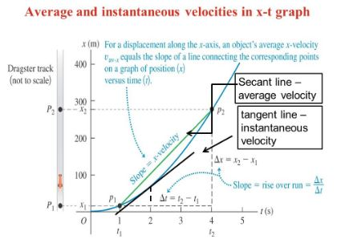2.2 Instantaneous Velocity
Instantaneous Velocity is the velocity at any specific instant of time or specific point along a path (speed and direction). Usually “instant” refers to “very fast” but in physics “instant” has no duration. Instead it refers to a single value of time.Contents
The Equation SpeedThe Equation
Finding exactly what the instantaneous velocity is at any moment.- 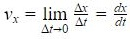
- The instantaneous velocity is written as Δx/Δt as both approach 0. This is also called the derivative of x written as dx/dt.
- The term “velocity” refers to instantaneous rather than average velocity unless specified
Speed
Speed denotes distance traveled divided by time. The symbol v with no subscript denotes instantaneous speed, measuring how fast a particle is moving. Instantaneous speed is the magnitude of instantaneous velocity so it can never be negative.
On a graph of positions as a function of time for a straight-line motion, the instantaneous velocity at any point is equal to the slope of the tangent to the curve at that point.
A Motion-Diagram shows the position of the particle at various times during the motion as well as arrows to represent the velocity each unit of time
2.3 Average and Instantaneous Acceleration
Average Acceleration is a vector quantity whose x-component is change in the x-component of velocity, divided by the y-component, the time interval (change in time). Instantaneous Acceleration is the limit of the average acceleration as the time interval approaches zero. The instantaneous acceleration equals the instantaneous rate of change of velocity with time. 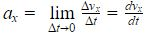V-T Graph
A V-T graph is a graph with velocity (v) on the vertical axis and time (t) on the horizontal axis. This graph depicts change in velocity over time (basically derivative of position versus time graph). The instantaneous acceleration on these graphs is the slope of the tangent to the curve at a specific point (da green line). 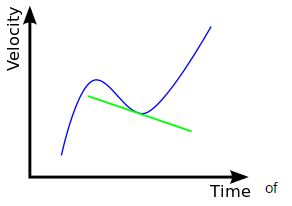- Deceleration describes a decrease in speed (positive or negative ax depending on the sign of vx).
- If vx and ax have the same sign, the object is speeding up.
- When both are positive the body is moving in a positive direction with increasing speed.
- When they have opposite signs the body is slowing down.
- If vx is positive and ax is negative, the body is moving in the positive direction with decreasing speed.
- If vx is negative and ax is positive, the body is moving in the negative direction with a velocity that is becoming less negative and it is slowing down.
Acceleration is the Derivative of Velocity
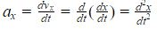- ax is the second derivative of x with respect to t.
- The second derivative of any function is directly related to the concavity or curvature of the graph of that function.
- If concave is up the acceleration is positive and velocity is increasing.
- If there is no concavity the acceleration is zero and velocity is constant.
- If concave is down the acceleration is negative and velocity is decreasing.
We can learn about the acceleration of a body from a graph of its position verses time.
2.4 Motion with Constant Acceleration
A falling body has constant acceleration if the effects of the air are not important. Also, this section has a lot of equations so be prepared.Contents
All Da EquationsAll Da Equations
An a-t graph shows acceleration versus time (basically the derivative of the v-t graph).- 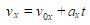 for constant acceleration only (v0x being the initial velocity).
- ax is the constant rate of change of velocity.
- axt is the product of the change in velocity per unit time (total change in velocity from the initial time [t=0] to the later time [t]).
- vx at any time t equals the initial velocity (v0x) plus the change in velocity (axt).
- The change in velocity (vx-v0x) of the particle between t=0 and later time t equals the area under the ax-t graph between the two times.
- 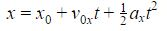 for constant acceleration only.
- This equation defines the position of the body based on the initial position, initial velocity, and acceleration based on time.
 for constant acceleration only.
for constant acceleration only.- 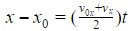 for constant acceleration only.
- The x-t graph for constant acceleration is always a parabola.
- The curve intercepts the x axis at x0 and t=0.
- The slope of the tangent at t=0 equals v0x, the initial velocity.
- The slope of the tangent at any time t equals the velocity vx.
- The slope and velocity are continuously increasing, so the acceleration ax is positive. If ax is negative the x-t graph will be concave down (downward curve).
- When the acceleration is zero:
- vx = v0x= constant
- x=x0+vxt
2.5 Freely Falling Bodies
Aristotle thought that heavy objects fall faster than light objects. He was wrong. Learn why!Contents
Galileo's CounterproposalWhat Did Galileo Think?
Galileo thought bodies should fall with a downward acceleration that is constant and independent of body weight. This was true.- If the distance of the fall is small compared to the radius of the earth, the acceleration is constant.
- Free Fall: the idealized model that neglects the effects of air, the earth’s rotation, and decrease of acceleration with increasing altitude.
- Acceleration due to gravity is the constant acceleration of a freely falling body (denoted as “g” it is equal to 9.8 m/s2)
- g is always positive and will change if the gravity for a planet changes.

Memes
Abandon all hope — Ye Who Enter Here 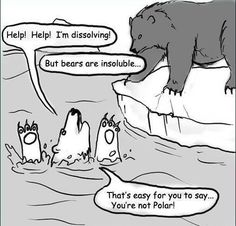 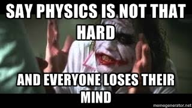 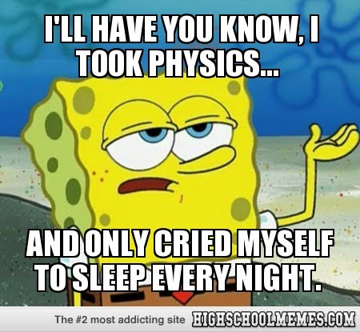
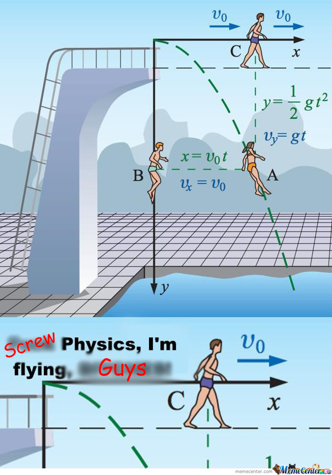
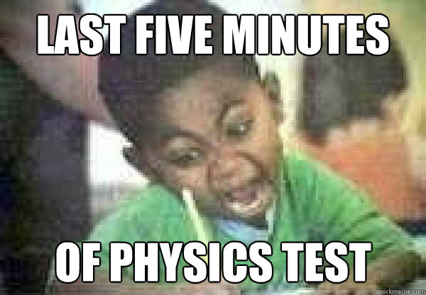
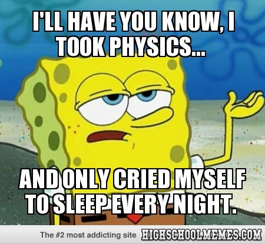
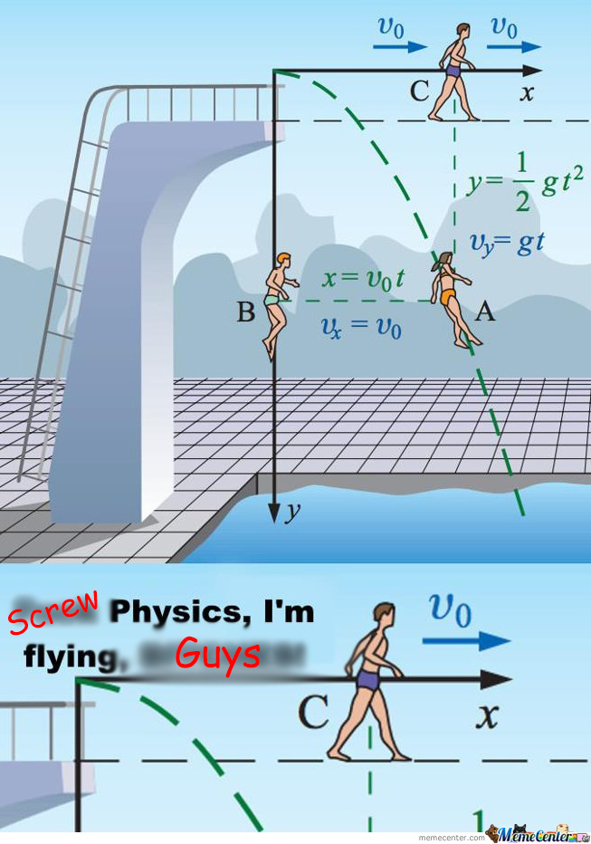
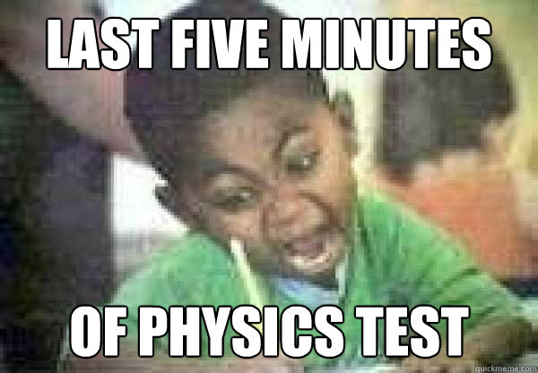
Videos
If you spend too much time thinking about a thing, you'll never get it done.- Bruce Lee